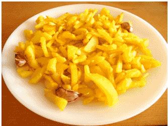

Patatas Fritas
Receta de Patatas fritas caseras

Ingredientes
- 3 o 4 patatas (300g)
- 4 dientes de ajo
- Aceite de oliva
- Sal
Elaboración (Pasos)
- Calentar aceite en una sarten
- Añadir las patatas cortadas, la sal y los ajos
- Freír al gusto
- servir en plato
HAZ CLIK AQUI PARA VOLVER